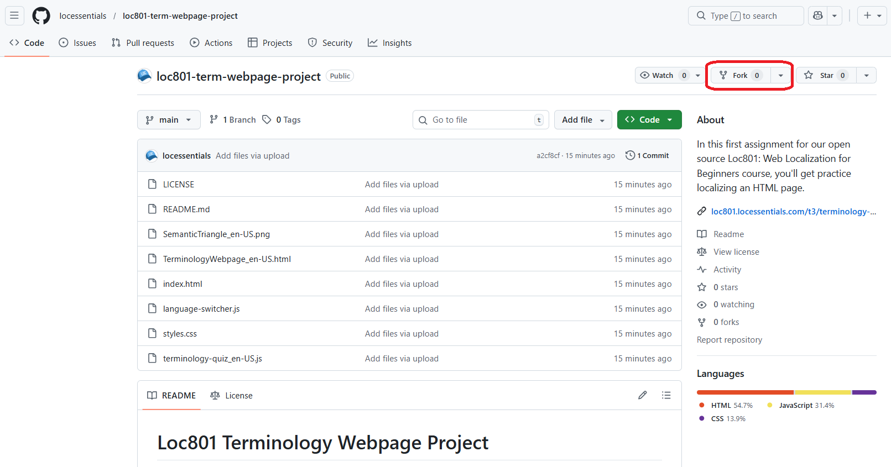

Terminology Webpage Project
Fork a GitHub repository and localize an HTML webpage about terminology and generative AI from U.S. English to Mexican Spanish.
Video Walkthrough
Before starting this assignment, watch the complete walkthrough of the HTML page you'll be localizing. The video demonstrates the structure of the files, explains which elements require translation, and provides guidance on handling different HTML components.
The video covers the three fundamental components that make a web page work (HTML for structure, CSS for styling, and JavaScript for interactivity), explains HTML tag structure, demonstrates the use of browser developer tools, and highlights specific localization considerations embedded as comments in the source code.
Fork the Repository
Once you're ready to start the project, your first step is to create your own copy of the code by forking the repository. Forking creates an independent copy under your GitHub account where you can make changes without affecting the original.
Navigate to the Repository
Go to the loc801-term-webpage-project repository on GitHub.
Click the Fork Button
In the top-right corner of the repository page, click the "Fork" button.
Create Your Fork
GitHub will prompt you to choose where to create the fork. Select your personal account. You can keep the default repository name or customize it if you prefer. Once created, you'll be redirected to your forked repository page.
Clone the Repository to Your Computer
Now that you have your own fork, you need to download it to your computer so you can edit the files in Visual Studio Code. This process is called "cloning."
Get the Repository URL
- On your forked repository page on GitHub, click the green Code button
- Make sure HTTPS is selected
- Copy the URL (it will look like
https://github.com/yourusername/loc801-term-webpage-project.git)
Clone Using Command Line
- Open Git CMD (Windows) or Terminal (macOS/Linux)
- Navigate to where you want to store the project. For example:
cd C:\Users\yourname\Documents\GitHub - Clone the repository:
git clone https://github.com/yourusername/loc801-term-webpage-project.git - A folder named
loc801-term-webpage-projectcontaining all the project files should now appear in your chosen location
Verify the Clone
Navigate to the folder location you specified and confirm that the loc801-term-webpage-project folder exists with all the files inside (index.html, TerminologyWebpage_en-US.html, styles.css, etc.).
Understanding the Repository
Before diving into translation work, take time to understand the repository structure and documentation. Professional localization projects typically include several key files.
What is a README?
A README file is the instruction manual for a repository. It's typically the first file developers and collaborators read when they encounter a project. READMEs usually explain what the project does, how to set it up, how to use it, and any important information about contributing or licensing.
In this repository, the README.md file provides comprehensive instructions about the project structure, what needs to be translated, what can be left unchanged, and how to test your work locally and on GitHub Pages.
Understanding the LICENSE
The LICENSE file specifies how you can legally use, modify, and distribute the project. This repository uses a Creative Commons Attribution 4.0 International License (CC BY 4.0), which means you can:
- Use the content for any purpose, including commercially
- Modify and adapt the content
- Share your modified version
- Include your work in your professional portfolio
The only requirement is that you must give appropriate credit to the original author (Alaina Brandt) and indicate if changes were made. When you create your Spanish translation, you should credit yourself as the translator while maintaining attribution to the original author.
Assignment Instructions
Your task is to create a Mexican Spanish localization of the terminology webpage. Follow the LOC NOTES embedded in the HTML comments for guidance on handling specific elements.
Create the Spanish HTML File
Duplicate TerminologyWebpage_en-US.html and rename it to TerminologyWebpage_es-MX.html. This will be your working file for the Spanish translation.
Update the Language Attribute
Change the HTML lang attribute from en-US to es-MX. This helps browsers and assistive technologies properly render your content.
Translate Required Elements
Work through the file systematically, translating all required elements listed in the checklist below. Pay special attention to:
- Main page title and all headings (h1, h2, h3)
- All paragraph text and list content
- Navigation elements and the language selector label
- Quiz questions and button text
- Image alt text for accessibility
- Page metadata (title tag and meta description)
Test Locally
Open TerminologyWebpage_en-US.html in your browser or with Live Server in Visual Studio Code. Use the language picker to switch between English and Spanish versions. Verify that all content displays correctly and that text expansion hasn't broken the layout.
Commit and Push
Commit your changes with a clear message like "Add Mexican Spanish localization" and push to your forked repository.
Enable GitHub Pages
In your repository settings, navigate to Pages and enable GitHub Pages deployment from the main branch. After a few minutes, your site will be live at https://yourusername.github.io/loc801-term-webpage-project/.
Test on GitHub Pages
Visit your GitHub Pages URL and test the automatic language detection (it should show Spanish if your browser is set to Spanish), the language picker functionality, and the quiz in both languages.
Pre-Submission Checklist
Before sharing your work, verify that you've completed all required elements. Use this checklist as your final quality control.
Required Elements
1. Structural Components
- File name is exactly
TerminologyWebpage_es-MX.html - HTML
langattribute changed toes-MX
2. Core HTML Content
- Main page title translated
- All headings (h1, h2, h3) translated
- All paragraph text translated
- Navigation elements translated
- Lists (both ordered and unordered) translated
- Figure captions translated
3. Metadata and SEO
- Page title tag (
<title>) translated - Meta description translated
4. Interactive Elements
- Language selector label translated
- Quiz question text translated
- Button text translated
5. Accessibility Elements
- Image alt text translated
Optional Bonus Elements
For extra practice and to strengthen your portfolio:
6. JavaScript Content
- Create
terminology-quiz_es-MX.js - Translate quiz feedback messages
- Translate correct/incorrect answer responses
- Translate dynamic content messages
- Translate user error messages
7. Image Content
- Recreate the semantic triangle image with Spanish labels
- Save as
SemanticTriangle_es-MX.png
- Grammatical accuracy - Correct Spanish grammar and syntax
- Technical precision - Accurate translation of terminology and localization concepts
- Cultural appropriateness - Follows Mexican Spanish conventions and cultural norms
- Formatting preservation - Special characters, HTML structure, and styling maintained
- Inclusive language - Uses gender-neutral constructions where appropriate in Spanish
Common Issues to Avoid
- Leaving English text in alt attributes - these are often overlooked but crucial for accessibility
- Missing translations in nested HTML elements - make sure you translate content inside other tags
- Not accounting for text expansion - Spanish is typically 15-30% longer than English, so check that your layout doesn't break
- Breaking HTML/CSS formatting during translation - be careful not to accidentally delete closing tags or modify class names
- Forgetting to update the
langattribute toes-MX- this is easy to miss but important for SEO and accessibility - Translating technical file names or code references - file names like
language-switcher.jsshould remain unchanged
Submission
Submit the link to your GitHub Pages site in the format requested by your instructor:
https://yourusername.github.io/loc801-term-webpage-project/
Your instructor will test the automatic language detection, language switcher functionality, translation quality and cultural appropriateness, and verify that all required elements from the checklist have been completed.